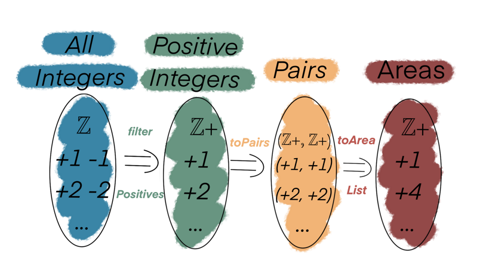

Introduction to ADTs (Algebraic Data Types)
Algebraic Data Types (or ADTs) model the flow a program (or a system) in terms of data & functions that describe the complete behaviour and states the data can go through.
Let's take an example to grok the concept better.
Example: Area of a rectangle
Calculate the area of a rectangle from a list of positive integers
Here's a possible algorithm:
- Take a list of integers (positive & negative)
- Filter for positive integers ie., remove negative integers
- Create pairs from the filtered list
- Apply equation for area of rectangle
Types without ADTs
Base functions:
def filterPositives(allIntegers: List[Int]): List[Int] = allIntegers.filter(_ > 0) def toPairs(positiveIntegers: List[Int]): List[(Int, Int)] = positiveIntegers.map(i => (i, i)) def toAreaList(pairs: List[(Int, Int)]): List[Int] = pairs.map({ case (l: Int, b: Int) => l * b })
We can express our program in terms of these functions:
def program(allIntegers: List[Int]): List[Int] = { val positiveIntegers: List[Int] = filterPositives(allIntegers) val pairsOfPositiveIntegers: List[(Int, Int)] = toPairs(positiveIntegers) toAreaList(pairsOfPositiveIntegers) } // Elegant alternative def elegantProgram(allIntegers: List[Int]): List[Int] = toAreaList _ compose toPairs compose filterPositives apply allIntegers
That's awesome but it is not so straightforward to make sense of how or what data is flowing through where in the program:
type program = (List[Int] => List[Int]) => // filterPositives (List[Int] => List[(Int, Int)]) => // toPairs (List[(Int, Int)] => List[Int]) // toAreaList
Types with ADTs
That is a crazy amount of Lists, Ints and List of Ints to follow around. What makes it worse is that we have no idea about what the data types signify, for example - How does List[Int] used in filterPositives input differ from the one used by toPairs?
We can model our system better using ADTs. But first, let's start by visualizing our problem:

The diagram nicely helps break down the program into functions, data stages & data types.
Functions
filterPositivestoPairstoAreaList
Stages of Data:
All IntegersPosiivesPositive PairsAreas
Data Types
-
ℤ(Remember thatℤin mathematics is used to denote the set of all integers) ℤ+(ℤ+, ℤ+)
In previous example, we had functions & types of data being passed around but nothing to describe the stages of data.
This is where ADTs comes in.
ADTs are a set of data classes (
case classes in Scala) that encapsulate our primitive types into domain specific descriptive types.
Let's start by describing stages of our data:
case class AllIntegers(values: List[Int]) case class Positives(values: List[Int]) case class PositivePairs(values: List[(Int, Int)]) case class Areas(values: List[Int])
Now our functions change to:
def filterPositives(allIntegers: AllIntegers): Positives = Positives(allIntegers.values.filter(_ > 0)) def toPairs(positiveIntegers: Positives): PositivePairs = PositivePairs(positiveIntegers.values.map(i => (i, i))) def toAreaList(pairs: PositivePairs): Areas = Areas(pairs.values.map({ case PositivePairs(l: Int, b: Int) => l * b }))
The data flow changes to:
type program = AllIntegers => Positives => // filterPositives PositivePairs => // toPairs Areas // toAreaList
The program can be written as
def elegantProgram(allIntegers: AllIntegers): Areas = // Note the types used for input & output toAreaList _ compose toPairs compose filterPositives apply allIntegers
An important thing to appreciate here is that using ADTs now makes it harder to make mistakes with function composition. For example, when we were using primitive types, we could've easily written following code which would compile and run:
def programPrimitiveTypes(allIntegers: List[Int]): List[Int] = allIntegers
However with ADTs, we have the compiler on our side ensuring the program is typesafe and correct.
def programADTs(allIntegers: AllIntegers): Areas = allIntegers // Compiler error!
Conclusion
I hope this sheds some light on the value of ADTs and why they are useful.
There is a lot more to ADTs but I will cover it in a separate post using the context of a web application.